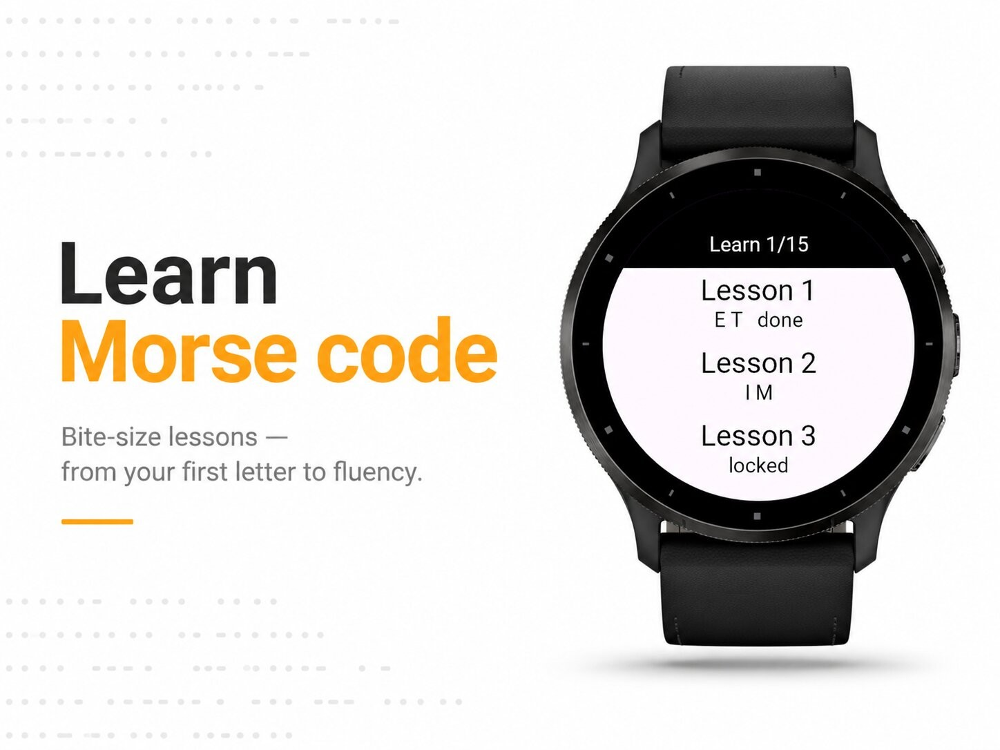
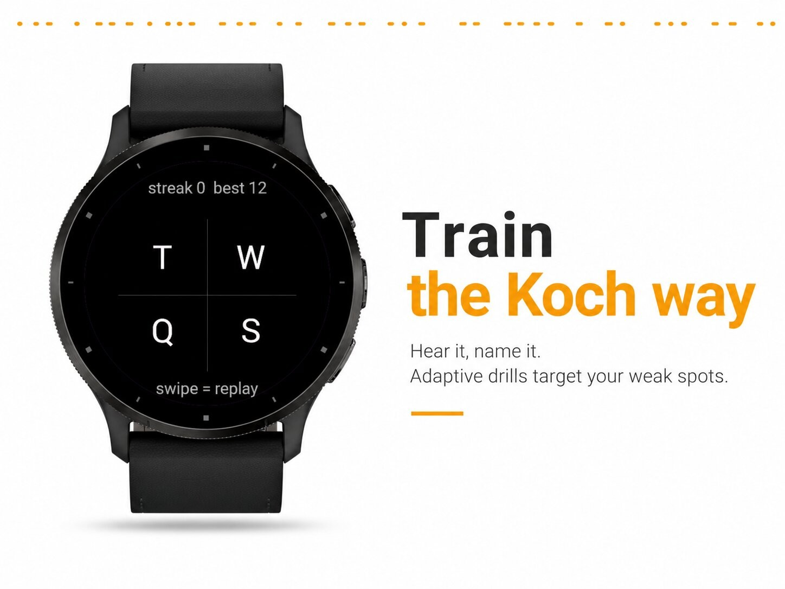
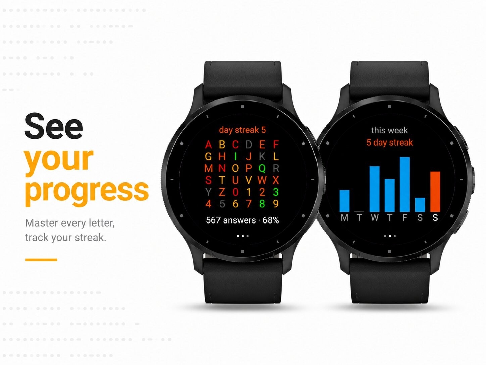
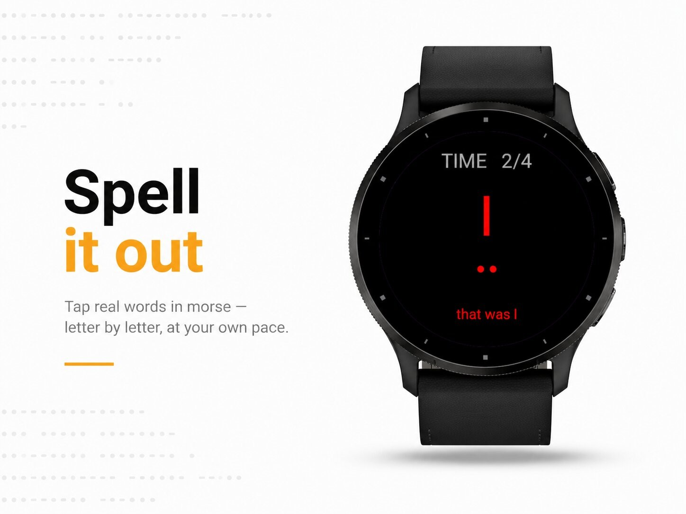

Everyday tools · Device app
Learn, practise and translate Morse code.




MorseTap — learn, practice & translate Morse code, right on your wrist.
Morse code is over 180 years old and still going strong — in ham radio, aviation, the military, accessibility tools, and as a fun mental workout. MorseTap makes learning it genuinely easy, turning spare moments on your watch into real practice. No phone, no account, no internet connection — everything runs on your Garmin.
Whether you're starting from zero or brushing up for your amateur-radio licence, MorseTap grows with you: from your very first dot and dash to sending and reading whole words at speed.
What you can do
· Learn — Structured, bite-size lessons take you from your first letter all the way through the full alphabet, numbers and symbols. Each new character is introduced clearly with its sound, its rhythm and its dot-and-dash pattern, so it sticks.
· Koch method — Train the way the pros do. You hear a character and name it, building instant recognition at real speed. MorseTap's adaptive engine keeps track of how you do and automatically serves up the characters you struggle with most, so you spend your time where it counts.
· Listen — Feel Morse through your watch. Each character plays back as vibration (and tone), and you tap it right back. Perfect for silent practice on the train, in a meeting, or in bed — no sound required.
· Blitz — A fast, addictive 60-second challenge. Answer as many characters as you can before the clock runs out and chase a new personal best every round.
· Spell — Move from single letters to real words. Tap out whole words in Morse, letter by letter, at your own pace, and build the muscle memory for actual sending.
· Keyboard — Free-form Morse input: short tap for a dot, hold for a dash. Compose any message you like and watch it decode in real time.
· Translate — Type any text on the built-in keypad and instantly see it converted to Morse code, ready to read or study.
· Chart — A complete, always-available reference of every letter, number and punctuation mark with its Morse pattern — handy the moment you get stuck.
· Progress — See how far you've come. A colour-coded mastery grid shows your accuracy for every character at a glance, a weekly activity chart tracks how often you practise, and you can watch your day-streak and best scores climb.
Made to fit your training
· Adjustable sending speed, so you can start slow and ramp up to real WPM
· Sound and vibration toggles — practise out loud or completely silently
· Adaptive difficulty that follows your strengths and weaknesses automatically
· Clean, high-contrast design built for round AMOLED Garmin watches
Who it's for
· Complete beginners who want a friendly, structured way in
· Ham-radio and CW operators keeping their recognition sharp
· Preppers, scouts, sailors and aviators learning a timeless skill
· Anyone who wants a genuinely useful brain-training habit on their wrist
Learn it in minutes a day, keep it for life.
Tap · learn · master Morse.